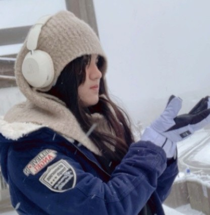
國立高雄師範大學
工業科技教育學系 科技教育與訓練組
生日：9/30
興趣：畫圖、旅行、攝影
我畢業於臺南女子高級中學，目前就讀於工業科技教育學系。目前除了課業學習，也積極參與校內各類活動，希望透過不同的經驗拓展自己的視野。我發現自己對教育、課程設計以及與人互動有濃厚的興趣，也因此更加確立未來投入教育工作的方向。 在我的成長過程中，曾遇見許多對學生充滿耐心與關懷的老師。他們不只是課堂上的知識傳遞者，更是在學生迷惘時願意傾聽、陪伴與鼓勵的重要角色。那些被理解與支持的經驗，讓我深刻感受到教育的力量，也讓我開始思考是否有一天我也能成為這樣的人。 我希望未來能成為一位兼具專業與溫度的教師，在教導知識的同時，也能關心學生的想法與需求，陪伴他們在成長的道路上探索自我、建立自信。我相信每位學生都有屬於自己的優勢與發光的方式，而教育的重要價值之一，就是協助學生發現自己的可能性。對我而言，學習不應只是單向地接收知識，更應該是一個主動探索、思考與實踐的過程。未來在教學上，我希望營造一個能夠安心表達想法、勇於嘗試與不怕犯錯的學習環境，讓學生在獲得知識的同時，也能培養獨立思考、解決問題以及終身學習的能力。
我相信教育不只是傳授知識，更是影響一個人成長的重要力量。因此，我期許自己未來能成為學生願意信任、願意交流的老師，在他們追尋夢想的道路上，給予支持與鼓勵。
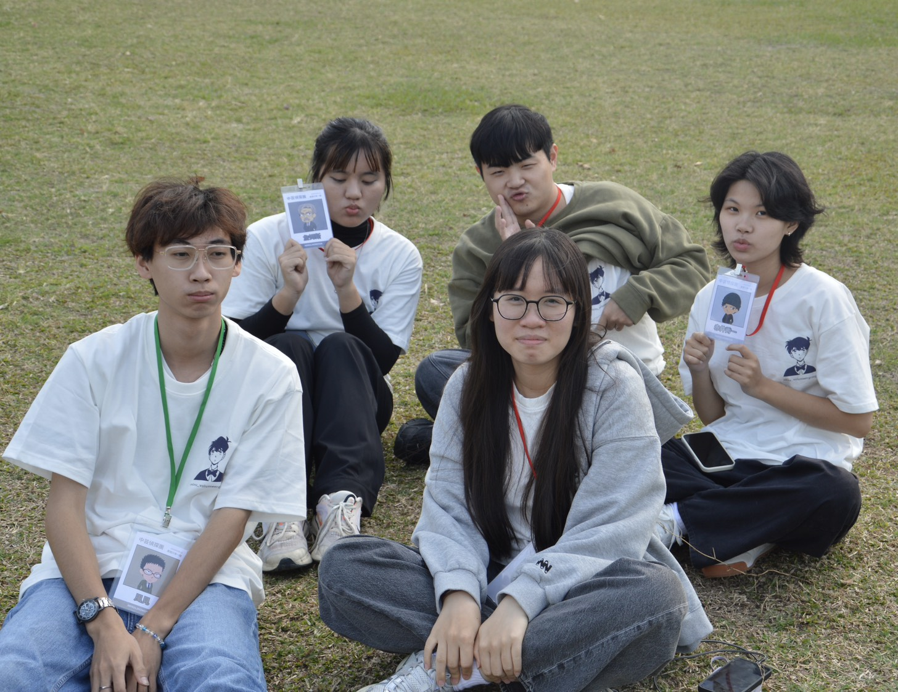
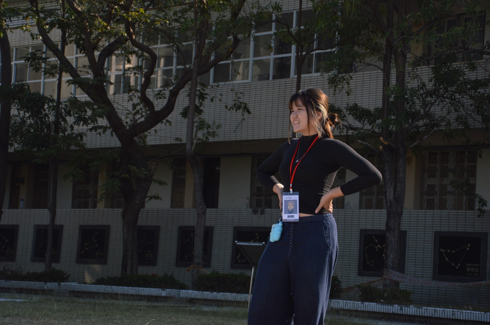
營隊是我大學生涯中相當重要的一部分，也是我接觸教育實務與團隊合作的重要起點。小時我以學員的身分參與各類營隊活動，上大學後我開始投入營隊工作團隊，從活動執行、課程協助到帶領隊員，逐漸學習如何站在教育者的角度思考。後來我也投入營隊的籌備工作，從主題發想、課程規劃、活動設計，到團隊協調與問題解決，每一個環節都讓我深刻體會到一場活動的完成需要許多人的共同努力。籌備過程雖然充滿挑戰，但也培養了我的溝通能力、應變能力以及團隊合作精神。在與學生互動的過程中，我看見每位孩子獨特的想法與潛力，也更加確信自己對教育工作的熱忱。
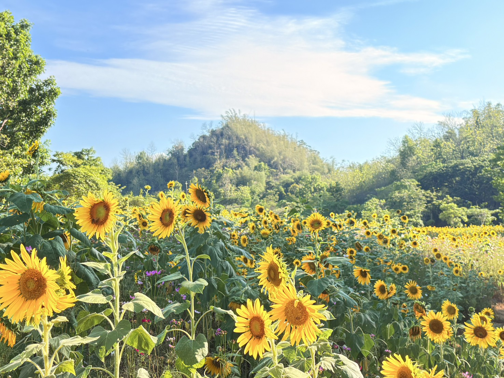
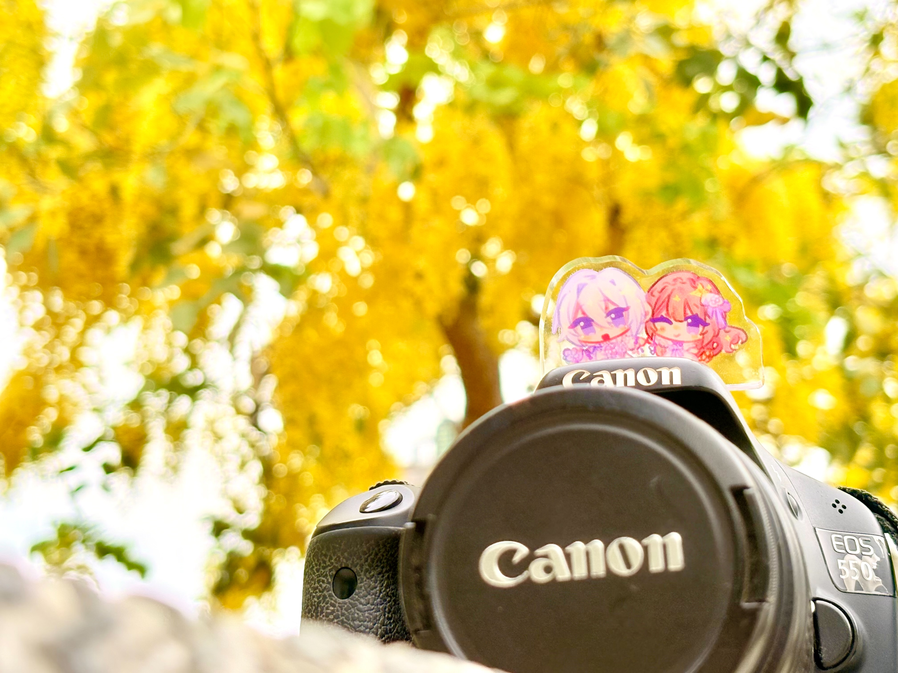
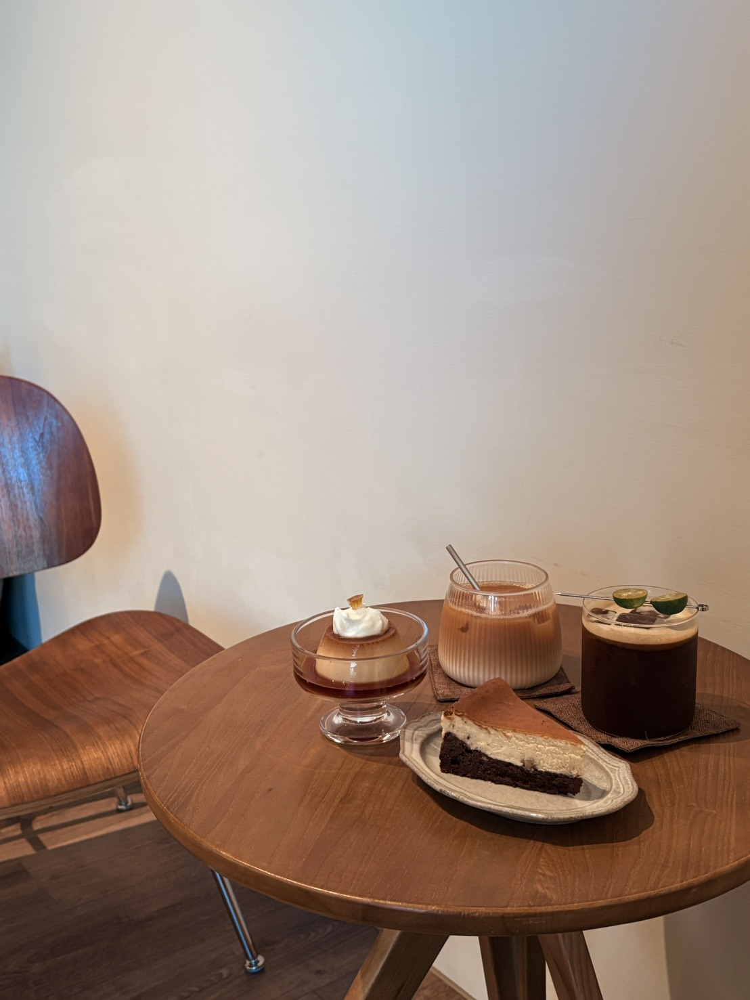
攝影是我紀錄生活的重要方式。我喜歡拍攝自然景觀、街景與人物，希望透過鏡頭捕捉那些容易被忽略的美好瞬間。在構圖與光線運用的過程中，也培養了我觀察細節與美感表現的能力。近來也接了一些商品拍攝，關於近物的構圖以及創意發想有些難倒我了，算是最近在攝影上的一大挑戰。
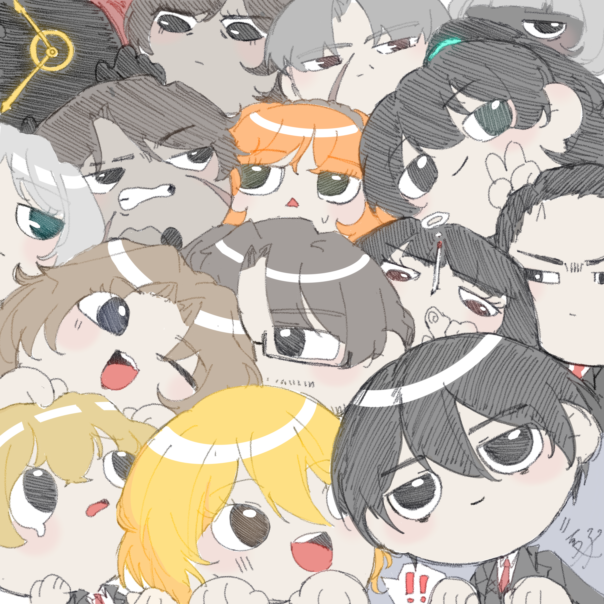
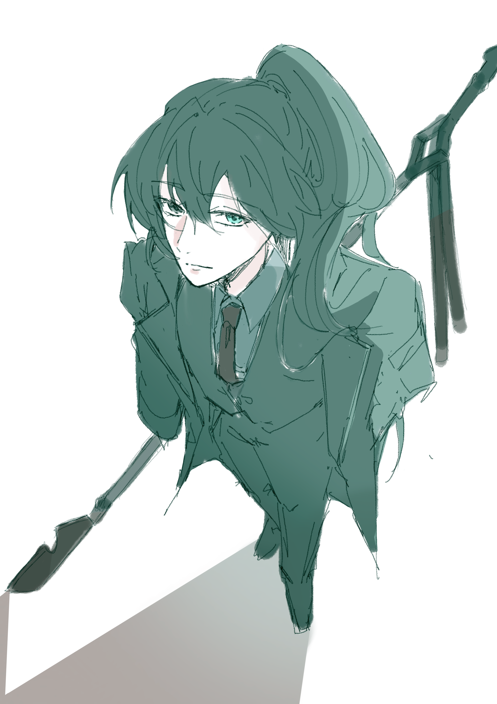
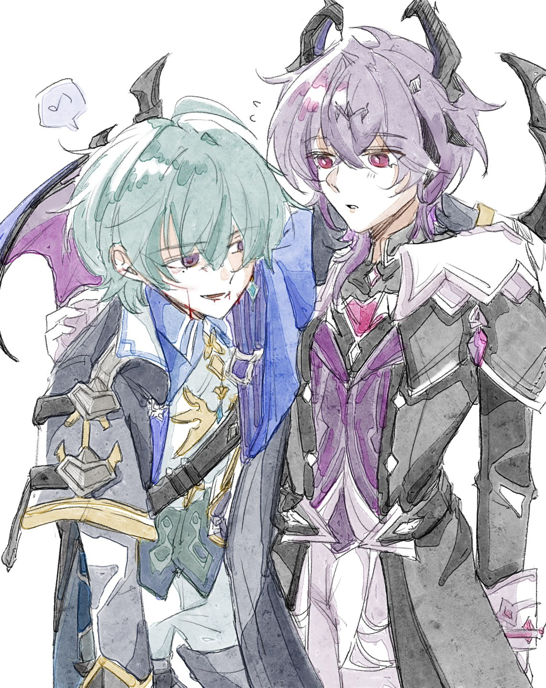
從小我便喜歡繪畫，插畫創作一直是我最投入的興趣之一。 透過數位繪圖軟體進行二次元角色設計與繪製，不僅培養了我的美感與觀察能力， 也讓我學習如何透過畫面傳達情感與故事。 自學畫以來，在近年來開始接受插畫委託，在與委託人溝通需求的過程中， 進一步提升了我的表達能力與時間管理能力。
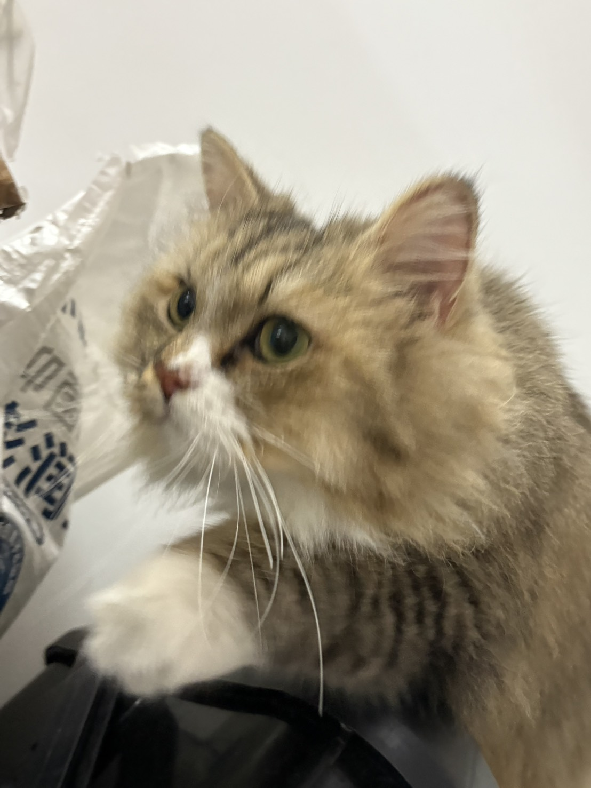
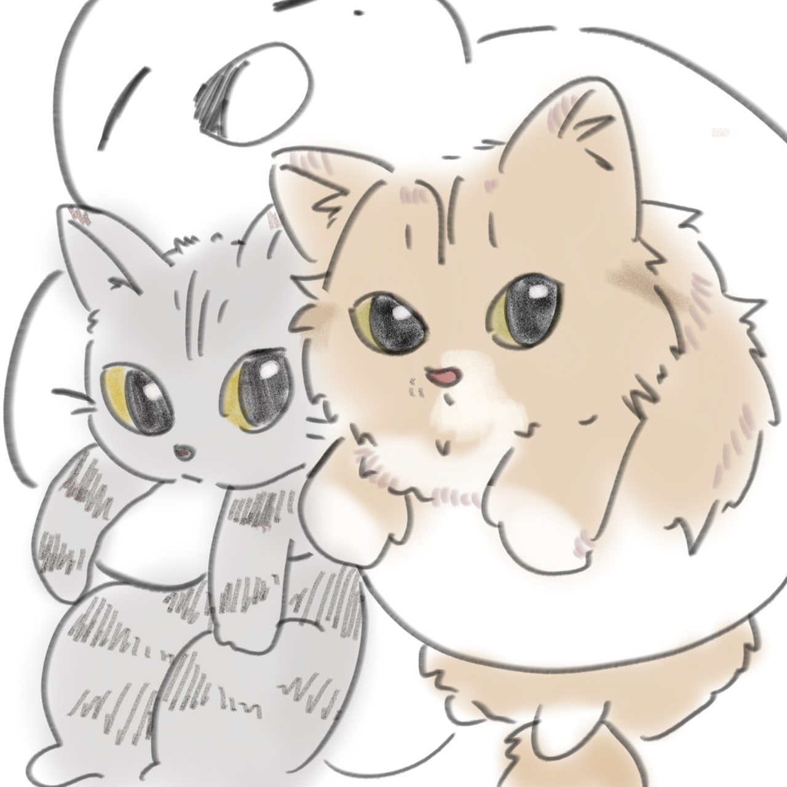
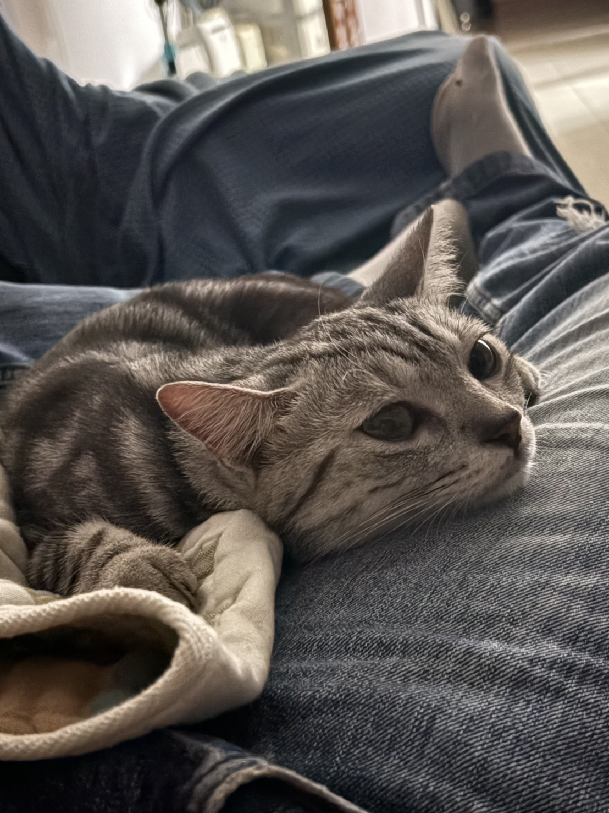
曾經因家庭因素，與陪伴我一年半的兩隻貓咪告別。起初我是家中唯一反對養貓的人，但在相處的過程中，牠們逐漸成為我視為家人的存在。送養的決定來得突然，我也因此經歷了一段不願面對分離的時期。那段時間裡，我逃避整理牠們的物品、逃避相關消息，甚至試圖用睡眠隔絕自己的情緒。然而在整理回憶的過程中，我逐漸理解，真正重要的並不是擁有多久，而是在陪伴的時間裡是否真誠付出。這段經歷讓我學會面對失去，也讓我更加珍惜人與人、人與動物之間的連結。我發現自己是一個願意投入感情、願意為重要的人事物付出耐心的人；同時也明白，有些告別雖然無法改變，但仍然可以帶著感謝與祝福繼續向前。
Instagram：@hs.ting_930
Email：jeanhuang0930@gmail.com